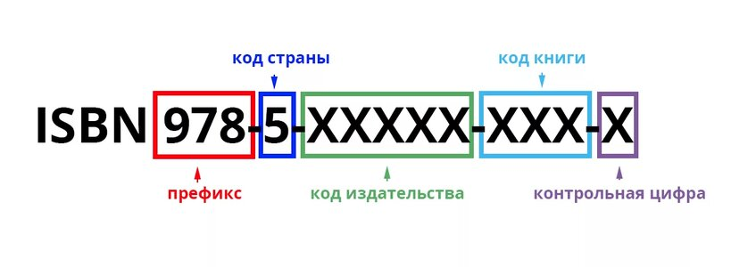

ISBN (Международный стандартный номер книги) — это уникальный идентификатор, который необходим для каждой отдельной версии издания.

Присвоение ISBN — это не просто формальность, а важный элемент сохранения культурного наследия. Издания с ISBN попадают в государственные книжные фонды и становятся доступны будущим поколениям.
Для получения ISBN можно обратиться в Российскую книжную палату как юридическому, так и физическому лицу. При этом важно помнить, что после присвоения номера издательство обязано предоставить обязательные экземпляры издания в крупнейшие библиотеки страны.
Наличие ISBN — это не только технический идентификатор, но и гарантия того, что издание будет доступно для будущих поколений и сможет найти своего читателя в любой точке мира.
ИПК «Лазурь» предлагает услуги по получению ISBN. Мы выкупаем эти номера и всегда имеем их в наличии, что позволяет нашим клиентам быстро и эффективно получить необходимый идентификатор для своих изданий.